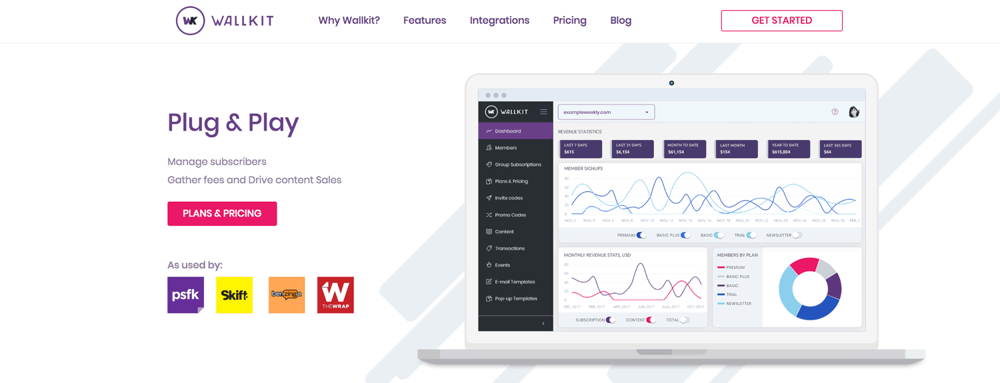

Wallkit
Wallkit is a proprietary paywall software owned by PSFK, built to provide membership features for their online trends publication. The company saw an opportunity to grow their paywall product by offering the software to other online publications for purchase.
As a product manager and strategist of Wallkit, I worked closely with our developers to create the Wallkit product, brand identity and go-to-market strategy. I conducted user research by talking to potential customers to gain an understanding of desired functionality and design and to identify a product market fit. I also built a sales pipeline, wrote proposals and helped secure Wallkit’s first 2 customers – generating 6-digit revenue.